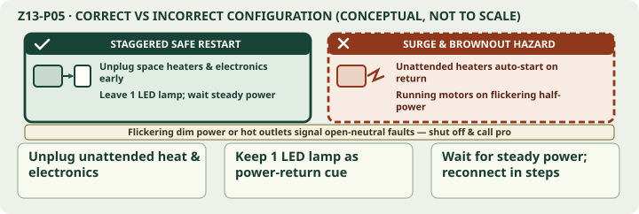

Z13-P05 · Home survival and utilities · New manuscript
Protect appliances and wiring from power-restoration voltage surges
Prevent compressor burnout, electronics failure, and fire hazards when utility circuits re-energize unevenly.
When it applies · Residential blackouts, flickering brownouts, or storm-damaged distribution lines awaiting utility repair.
Equipment · Listed surge protectors, access to wall plugs/breakers, and one indicator lamp.

Actions
- Unplug computers, medical chargers, televisions, refrigerators/freezers (if unstable flickering brownouts persist), and space heaters that could turn on unattended when power suddenly returns.[U01, U03]
- Leave one low-wattage interior LED lamp switched on so you notice immediately when utility service returns, then wait several minutes for voltage to stabilize before reconnecting appliances one at a time.[U01]
- Treat dim glowing lights, rhythmic flickering, humming motors, or hot outlets during partial restoration as hazardous brownout/open-neutral electrical faults—shut off affected breakers or main switch if safe and report to your utility/electrician immediately.[U01, U02]
Failure recognition · Leaving a portable electric space heater switched ON during an outage so it ignites nearby blankets when power restores overnight.[U01, U03]
Verify · Confirm unattended heat appliances are unplugged, one indicator lamp is set, and loads reconnect gradually only after stable restoration.[U01, ED]
Stop or change course · Burning electrical odor, sparking outlets, or persistent half-voltage flickering requires switching off power if safe, exiting, and calling the utility or fire service.[U01, U04]
Evidence and editorial notes
- U01 · FEMA / Ready.gov · Power Outages (current web edition)
- Section: Power Outages > Preparing and Responding Safely · Conditions: Residential utility electrical outages of hours to days
Support: Keep phones/medical batteries charged, maintain flashlights instead of candles, unplug sensitive appliances to protect against restoration surges, and verify backup power plans for electrically dependent medical devices.
Limitations: Home outage durations vary widely by grid damage; extended winter outages require heat/evacuation contingencies. · Conflicting evidence: None; aligns with CPSC and NFPA.
Editorial note: Establishes household outage baseline and medical-power priority in Z13. · Specialist reviewer: Emergency management and electrical safety
Primary source · checked 2026-11-24 - U02 · CPSC · CPSC Warns of Generator, Carbon Monoxide and Fire Hazards Ahead of Hurricane Season (2026 seasonal agency guidance)
- Section: Use portable generators outdoors; keep exhaust away · Conditions: Portable generator during household outage
Support: Run outdoors at least 20 feet from buildings and direct exhaust away. Use approved connections as the manual dictates; licensed electrical work governs transfer to a building. Never backfeed.
Limitations: Distance alone does not guarantee safety. Local code and exact equipment determine installation. · Conflicting evidence: See A02 claim audit for boundaries.
Editorial note: Core electrical isolation boundary across Z13 generator cards. · Specialist reviewer: Licensed electrician and fire safety
Primary source · checked 2026-11-24 - U03 · NFPA · Heating Fire Safety (current web edition)
- Section: Heating Equipment Safety > Space Heaters, Fireplaces, and Clearances · Conditions: Residential winter heating and supplemental backup heating
Support: Maintain at least a 3-foot clearance between anything flammable and any heating source (space heaters, fireplaces, wood stoves), inspect chimneys annually, use only the fuel specified by the heater manufacturer, and never use kitchen ovens to heat homes.
Limitations: Unvented fuel-burning heaters also create severe carbon monoxide and indoor air hazards; local building codes govern installations. · Conflicting evidence: None; aligns with CPSC-C and READY-HOME-F.
Editorial note: Grounds safe supplemental heating clearances and stop boundaries in Z13. · Specialist reviewer: Fire safety and licensed HVAC trades
Primary source · checked 2026-11-24 - U04 · FEMA / Ready.gov · Home Fires (current web edition)
- Section: Home Fires > Smoke Alarms, Fire Extinguishers, and Escape Plans · Conditions: Residential fire prevention during outages and supplemental heating
Support: Test smoke alarms monthly on every level and outside sleeping areas, keep two exits clear from every room, store fuels outside living spaces in approved containers, and evacuate immediately if a fire exceeds incipient containment.
Limitations: Candles and improvised indoor flames dramatically elevate outage house-fire deaths. · Conflicting evidence: None; integrates with CPSC CO-alarm rules (C09).
Editorial note: Anchors outage fire prevention, fuel storage, and exit readiness in Z13. · Specialist reviewer: Fire prevention and residential safety
Primary source · checked 2026-11-24
Source lineage · FEMA Ready.gov Power Outages; new manuscript · Classification · New manuscript.